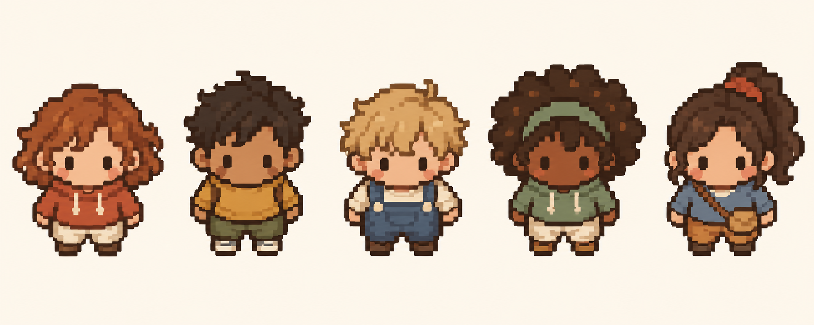
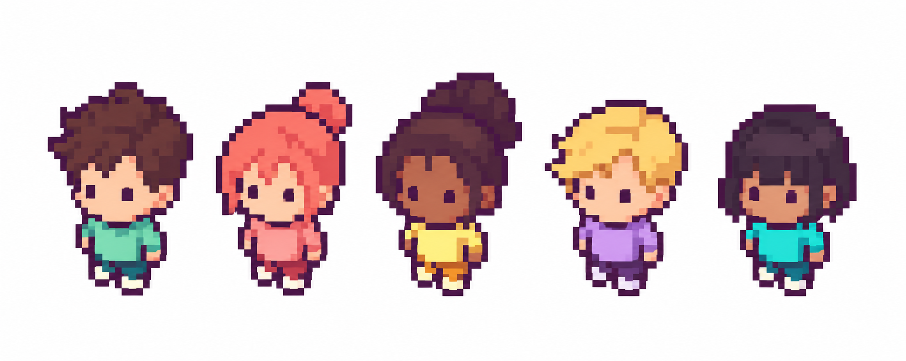
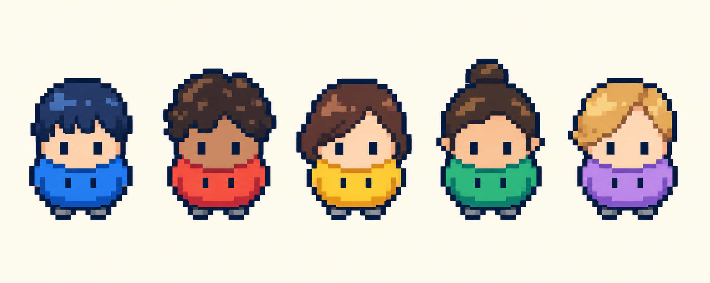
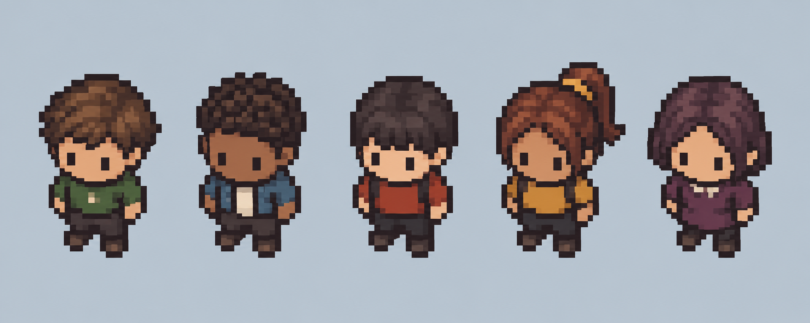
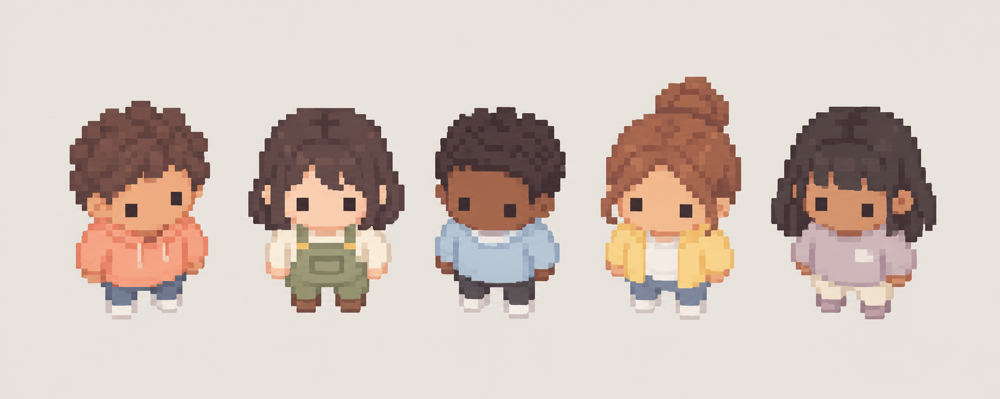
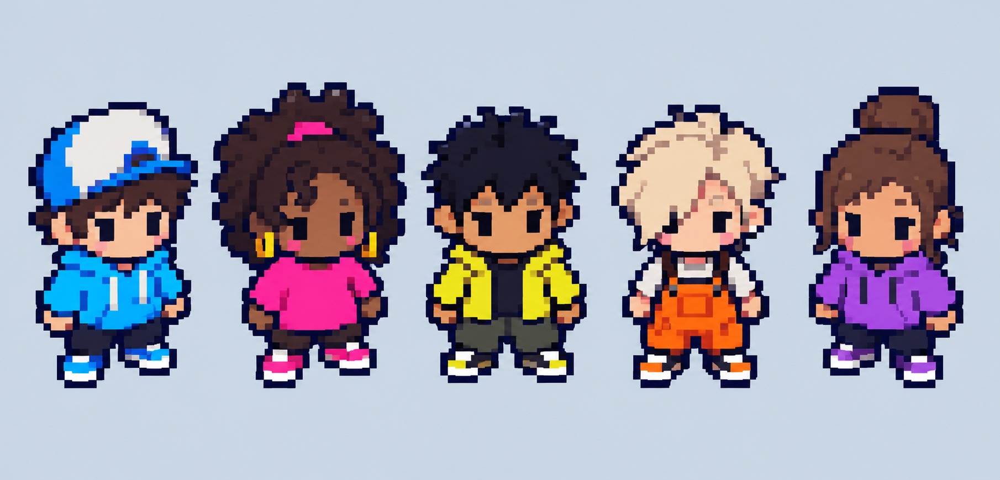
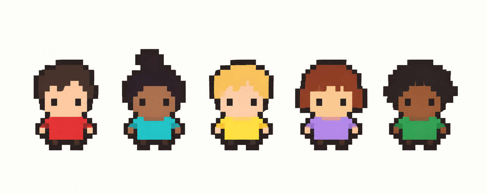
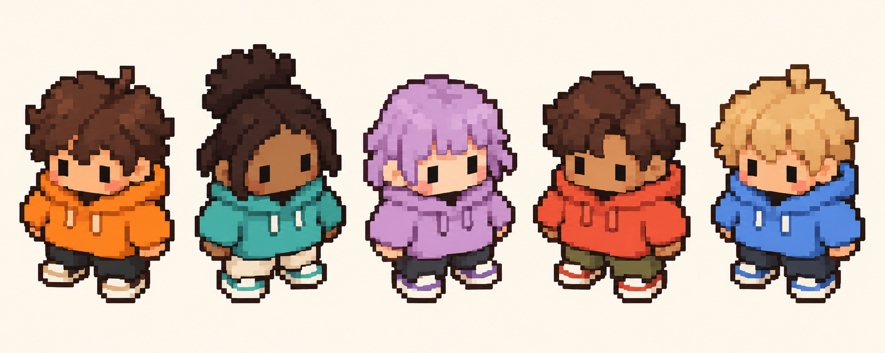
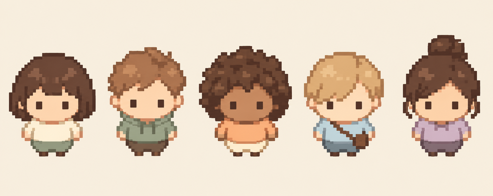
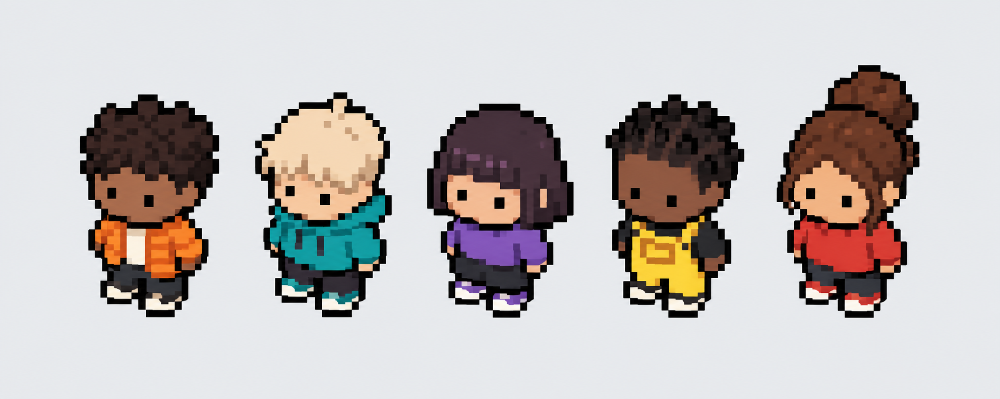

01 · Chaleureux

Ocres, sauge et denim ; humains compacts au trait brun, version la plus détaillée.
Ouvrir la planche
02 · Bonbons

Couleurs pastel vives et contour prune ; grandes coiffures et corps courts.
Ouvrir la planche
03 · Humains capsules

Silhouettes très rondes, grands hoodies, pieds minuscules ; le plus proche du croisement humain / haricot.
Ouvrir la planche
04 · Quartier rétro

Couleurs assourdies et contours sombres ; silhouette de petit habitant de RPG.
Ouvrir la planche
05 · Pastels sans contour

Contours colorés doux ; vêtements pêche, sauge et lilas, ambiance Gather chaleureuse.
Ouvrir la planche
06 · Arcade

Cyan, rose vif, jaune et violet ; silhouettes contrastées et accessoires discrets.
Ouvrir la planche
07 · Ultra simple

Grands pixels, formes plates et très peu de détails ; meilleure piste pour des avatars très petits.
Ouvrir la planche
08 · Hoodies carrés

Têtes et vêtements plus larges ; chaussures et manches généreuses, style plus illustré.
Ouvrir la planche
09 · Petits ronds

Visages ronds et proportions douces ; palette crème, abricot, sauge et bleu pâle.
Ouvrir la planche
10 · Équipe contrastée

Contour noir et couleurs franches ; personnages faciles à distinguer sur une carte.
Ouvrir la planche